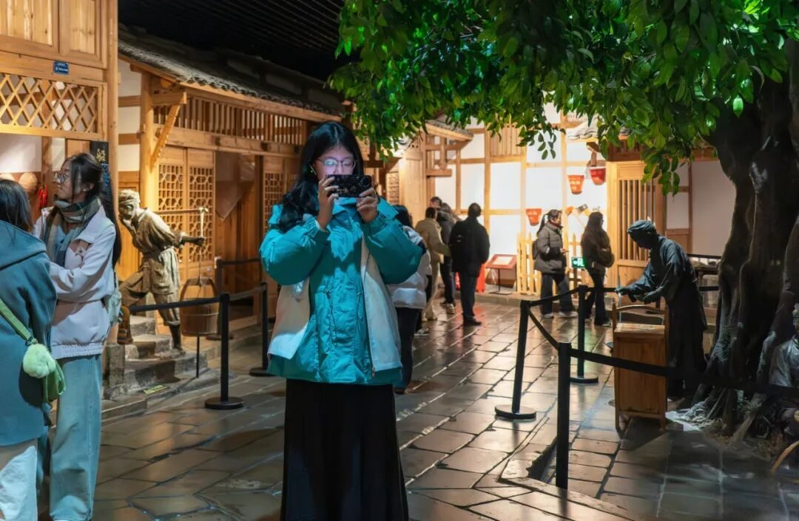
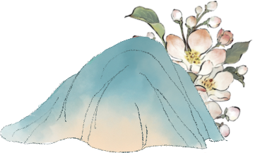
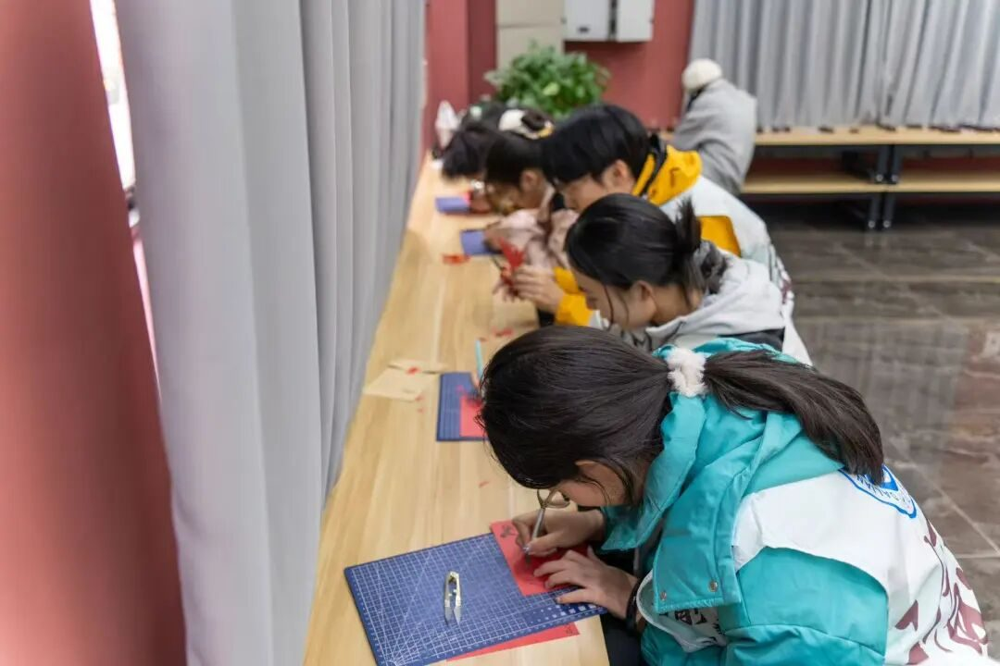
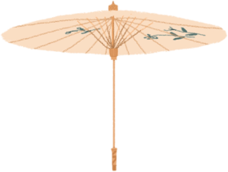
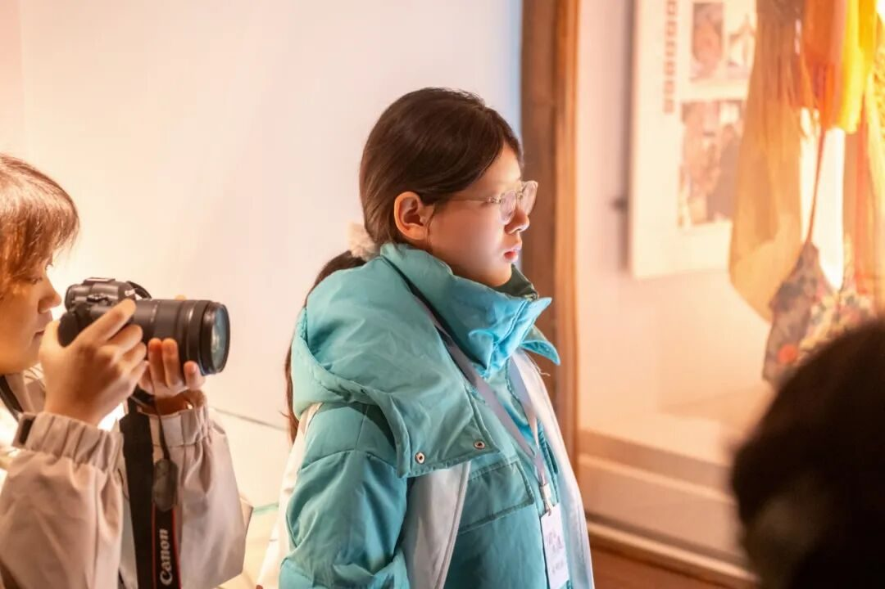
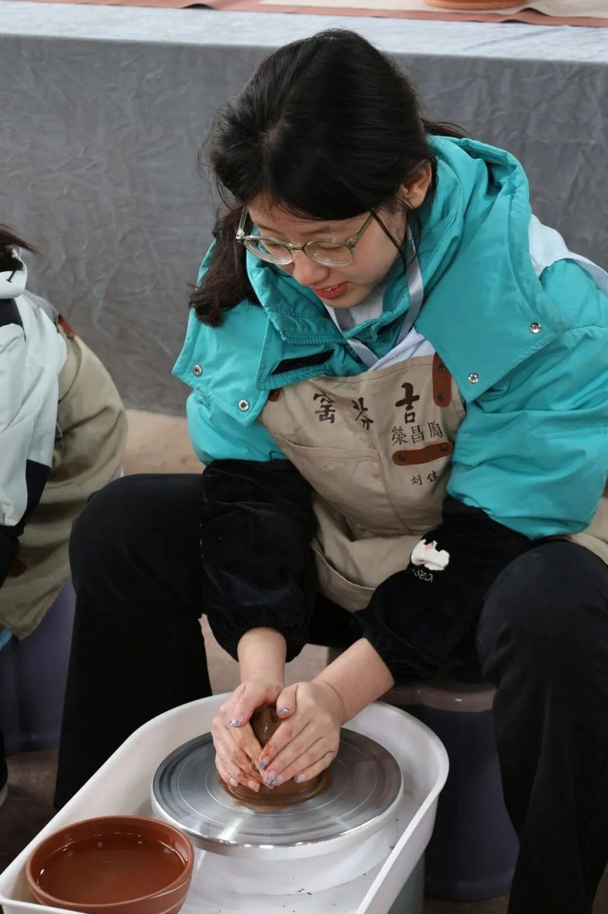
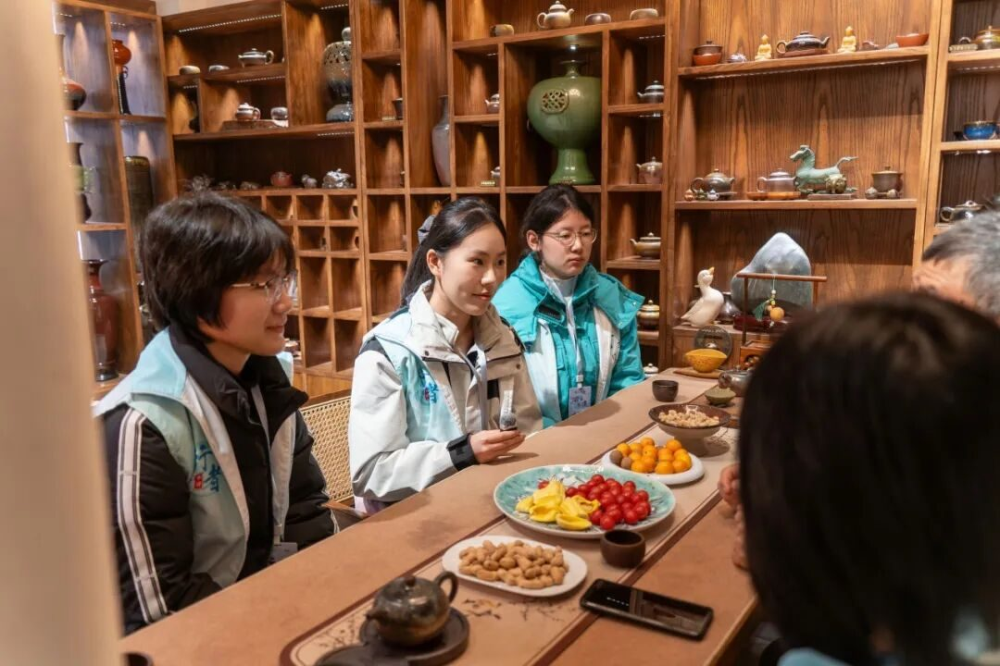

【行者无疆·渝见非遗】个人实践感悟——袁婉若

FEI YI / 非遗
早在实践前，我就对实践的开始翘首以盼，当飞机在江北徐徐滑停，当双脚结结实实的踏在了重庆的土地上，一场奇妙的跨越时空的对话就此展开。

「壹」

初遇非遗，是在重庆母城非物质文化遗产馆。川剧、火锅的由来、重庆三宝、多舛的发展、民风民俗等等，在这里我对重庆的厚重历史得以一窥。从重庆非遗体验中心到川剧博物馆，从三峡博物馆到川剧博物馆再到荣昌的匠人作坊，我一步步走进非遗。从远古遗迹到近代烽火，从青铜器到汉砖古币，沉默的文物串联起重庆坚韧、开放、豪迈的城市人格，我也真切的体会到，这些时光留下的瑰宝离我们其实并不遥远，他源于过去的背景，也根植现在的生活；从川剧的技巧到吃九宫格火锅的讲究，从扣碗茶的规矩到花丝镶嵌的精美绝人，从亲手体验穿扇、裱纸到揉泥、拉坯的体验，我明白了传统艺术的坚守与创新，既要守住本真魂魄，也要勇于探索，真正的传承，从来不是简单复制过去，而是在扎根传统中勇敢的生长。



「贰」
在整个实践过程中，最令我印象深刻的就是重庆非遗的实用性，它们不是仅供观赏的艺术品，它们曾经时重庆老百姓实打实在使用着的商品。只是现在，重庆三宝面临着同样的问题：传统手工艺高时间、高人力的成本投入让大众难以承担非遗手作的高昂成本；越来越少的传承人、快节奏的生活，当理想与现实相碰撞，非遗传承又该如何发展。也许传承从来不是传承人的孤军奋战，而是我们每一个人都能参与的使命，它们的过去历经艰辛又充满璀璨，它们的现在面临诸多难题又不断探索求存，它们的未来充满未知却由你我书写。


FEI YI / 非遗
很高兴自己有机会跟随行者的脚步来到这座山城，在这里深深触动我的不仅是悠久的历史，更时大街小巷里的烟火气，是我遇到的每一个人的真诚与善良。五天，说长不长，说短不短，刚好够我爱上这所云雾缭绕的山城。这次的实践已然结束，行者的脚步却依然向前，我们的故事未完待续，即将开启新的篇章。
行者无疆
来源 | 行者无疆实践团
文字 | 袁婉若
图片 | 行者无疆实践团
编辑 | 冯语城
审核 | 刘辰锡
责编 | 邹靓靓 周 亮